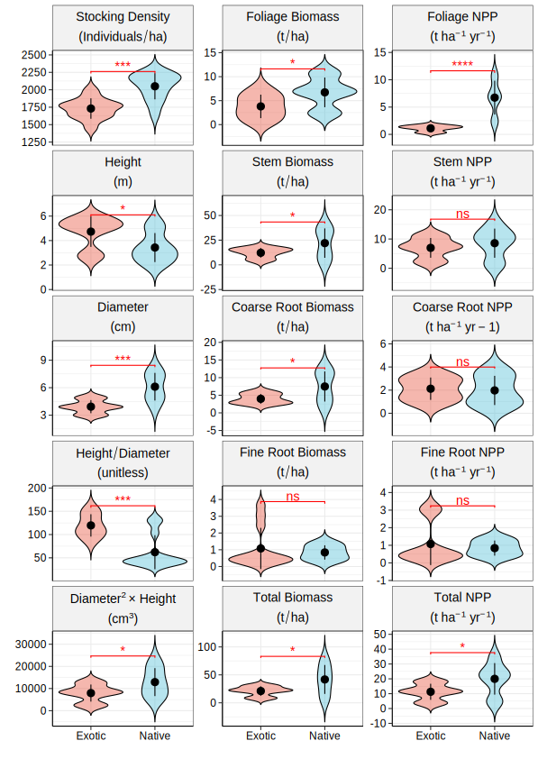
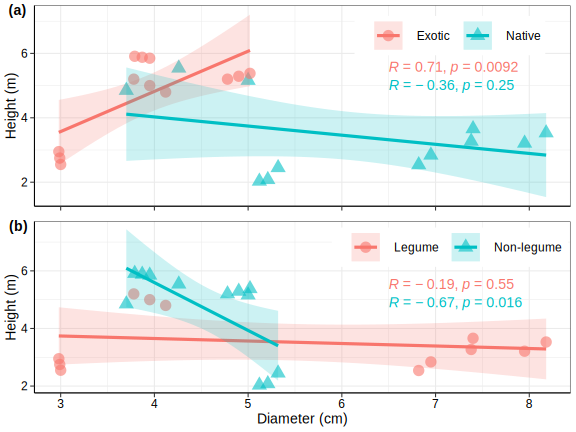
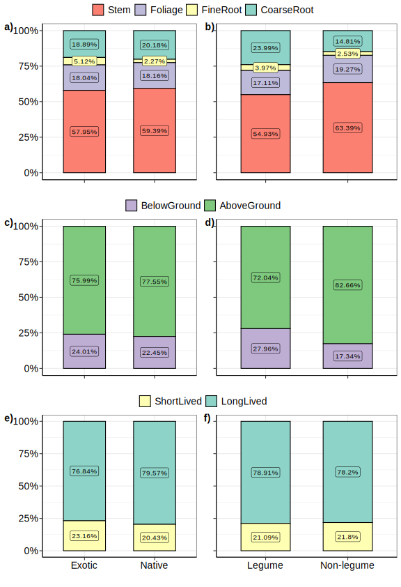
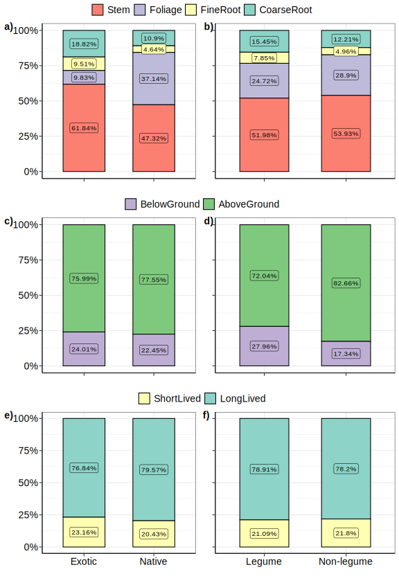
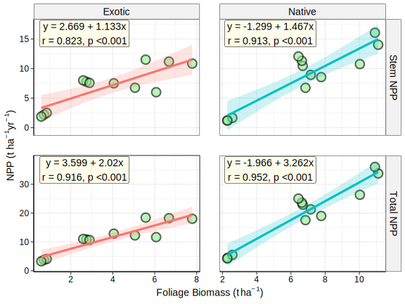

![]()
| Planted species | Surviving individuals / ha (%) | Mean ± 1 SE | ||
|---|---|---|---|---|
| Plot 1 | Plot 2 | Plot 3 | ||
| Exotic | ||||
Acacia auriculiformis |
1600 (64) | 1760 (70.4) | 1670 (66.8) | |
Casuarina equisetifolia |
1450 (58) | 1600 (64) | 1650 (66) | |
Cassia siamea |
1900 (76) | 1778 (71) | 1790 (72) | |
Grevillea pteridifolia |
1789 (72) | 2000 (80) | 1786 (71) | |
| Native | ||||
Albizia lebbeck |
2192 (89) | 2160 (86) | 2208 (88) | |
Albizia procera |
2224 (89) | 2192 (88) | 2208 (88) | |
Tectona grandis |
1645 (66) | 1822 (73) | 1867 (75) | |
Dendrocalamus strictus |
2000 (80) | 2000 (80) | 2088 (84) | |
| Data for exotic species obtained from Dutta and Agrawal (2003) and Singh et al. (1995) | ||||
| Values given in parenthesis represent the percent of survival of individuals | ||||
| Within the Mean ± 1 SE column, values followed by the same letter are not significantly different at p < 0.05, using the Tukey’s HSD test | ||||
Ecological performances of exotic and native woody species on coal mine spoil in Indian dry tropical region
Coal mine
Restoration
Journal Article
Ecological Engineering
In this article we analysed the growth and biomass production of exotic and native woody species on Indian coal mine spoils. We observed higher survival of native species on coal mine spoil, though exotic species exhibited faster growth rates than the native species on coal mine spoil. However, biomass production was higher for native species on coal mine overburden. Overall, we showed that native species performed better than exotic species in rehabilitation of coal mine.
Note
This article is originally written by authors and may differ from published version. Please refer to https://doi.org/10.1016/j.ecoleng.2021.106470
Abstract
Coal extraction by opencast mining involves the dumping of overburden or mine spoil as large heaps. These large heaps of overburdened materials can act as a serious threat to ecological integrity and, therefore, overall societal well-being. Plantations are often employed to establish revegetation and management of mine spoil, thus mitigating the effects of mining on the environment. However, the performance of plant species can be highly variable due to environmental and species-specific effects. Therefore, the present paper’s primary objective is to compare exotic (Acacia auriculiformis, Cassia siamea, Casuarina equisetifolia and Grevillea pteridifolia) and native (Albizia lebbeck, Albizia procera, Dendrocalamus strictus and Tectona grandis) species’ performance on the coal mine spoils. Previous studies on the Singrauli coalfields allowed us to compare the growth performance, standing biomass, and net primary production (NPP) of four exotic and four native species plantations. Our results showed that native species have significantly higher survival, stem diameter, biomass, and NPP than exotic woody plantations. Thus, exotic species might not be useful in mine spoil rehabilitation than the native species. Overall, this study suggests that native species are useful for mine spoil rehabilitation despite the faster growth of exotic species.
Keywords: Ecological restoration; Soil redevelopment; Exotic species; Native species; Coal mine spoil
Introduction
India is one of the significant coal producers worldwide; however, the demand for coal for electricity generation and industrial production is so high that it needs to import substantial coal quantities (IEA 2019). Most of the coal in India is extracted by surface mining, which involves removing the earth’s surface in the form of sheets resulting in a large amount of waste material, usually referred to as overburden or mine spoil (A. N. Singh and Singh 2006). This overburden is piled up to form new landforms looking like large stacks of mine spoil until refilling. These piles of mine spoils are characterised by a high concentration of metals and toxic chemical compounds (Novianti et al. 2018), which cascades into the ecosystem and reaches humans through various sources like contaminated food and water. Further, removal of topsoil and alteration in soil profile causes unavoidable loss to biodiversity, which disrupts the ecosystem structure and functions (Adibee, Osanloo, and Rahmanpour 2013; Feng et al. 2019).
Growing concerns about the environmental impacts of coal mining, together with the slow natural recovery of mine spoils, urge technical solutions to restore these degraded ecosystems into their original states (Macdonald et al. 2015). A successful restoration programme accelerates the natural recovery processes to check soil erosion, restore soil fertility, and enhance biological diversity (A. N. Singh, Raghubanshi, and Singh 2002). Therefore, the first step in any restoration programme, of course, is to protect the disturbed habitat and communities from being further wasted. Then follow attempts to accelerate the revegetation process for increasing biodiversity and stabilising nutrient cycling (A. N. Singh and Singh 2006; A. N. Singh, Zeng, and Chen 2006).
Plantations have been contemporarily used to restore degraded lands worldwide effectively (Badı́a et al. 2007; Bohre and Chaubey 2016; Erskine, Lamb, and Borschmann 2005; Jeżowski et al. 2017; A. Singh 2001; A. N. Singh and Singh 1999; A. N. Singh, Raghubanshi, and Singh 2004b). However, the suitability of species and their performance on coal mine spoil have remained a challenging task as the characteristics of coal mine spoils are highly heterogeneous and lack soil organic matter (SOM), so that it is regarded as a recalcitrant medium for plant growth (Adibee, Osanloo, and Rahmanpour 2013; Feng et al. 2019; K. Singh, Singh, and Tewari 2021).
Some of the earlier studies have evaluated several plant species’ growth and biomass production on coal mine spoil (Badı́a et al. 2007; Bohre and Chaubey 2016; Erskine, Lamb, and Borschmann 2005; Jeżowski et al. 2017; A. Singh 2001; A. N. Singh and Singh 1999; A. N. Singh, Raghubanshi, and Singh 2004b). Although exotic woody species are often suggested to restore coal mine spoil due to their fast growth and high economic or livelihood benefits, it often results in low biodiversity development (DAntonio and Meyerson 2002; Dutta and Agrawal 2003; Lamb, Erskine, and Parrotta 2005). Many previous studies have shown that exotic species can positively or negatively impact soil fertility and native flora while restoring degraded lands (Berger 1993; DAntonio and Meyerson 2002; Yan et al. 2020). Although exotic species may have higher survival (Citadini-Zanette et al. 2017) and improve soil properties (Yan et al. 2020), they often result in low carbon development compared to native species (Citadini-Zanette et al. 2017).
Net primary production is considered a critical functional parameter that helps evaluate species’ quality. Biomass is a crucial parameter of structural attributes. They directly contribute to organic matter, energy transformation, and nutrient cycling between vegetation and soil. Exotic species show successful establishment, and their fast growth often outcompetes the native species during the restoration (Huxtable, Koen, and Waterhouse 2005). Another study showed slight differences in biomass production among the exotic and native plants established on degraded lands (Islam et al. 1999). The biomass allocation to different plant parts can be controlled by environmental and biological (species-specific) factors (Boonman et al. 2020; Freschet, Swart, and Cornelissen 2015; Poorter and Sack 2012). However, the biomass allocation to different plant parts can vary between exotic and native species because species may have adapted to their native habitats and exhibit differential allocation strategies. Thus, there is a need for an increased understanding of the biology and impacts of exotic and native species on degraded lands. Therefore, comparing survival, growth and biomass production among exotic and native species becomes essential to assess the suitability of plant species for the reclamation process.
The present study compares the survival, growth performance, biomass accumulation, net primary productivity of 5-year-old native and exotic woody plantations established on coal mine spoils. We expect exotic species to have higher survival, growth, and biomass production on coal mine spoils because they usually exhibit higher competitive abilities. Therefore, they can sustain themselves on nutrient-poor and degraded lands. Specifically, we address the following four questions from our study:
- Can native species have higher survival and growth performance on coal mine spoils?
- What are the biomass and net primary production level among native and exotic plantations at earlier stages?
- Whether biomass production and net primary production (NPP) are species-specific?
Material and methods
Study site and climate
The plantations under present study were located in the west section of Jayant block of Singrauli Coalfields in Singrauli district of Madhya Pradesh, India, which lies between latitudes 24° 6′ 45″ – 24° 11′ 15″ N and longitude 82° 36′ 40″ – 82° 41′ 15″ E. The study area is situated on a plateau above the plain (around 500 m above mean sea level) on its southwest side. In contrast, the plateau’s foot’s average elevation is approximately 300 m above mean sea level. The climate of the area is tropical monsoon, and the year is divisible into a mild winter (November–February), a hot summer (March–June), and a warm rainy season (July–October). The mean monthly minimum temperature within the annual cycle ranges from 6 to 28 °C and the mean monthly maximum from 20 to 40 °C. The rainfall annually averages 1069 mm, of which about 90% occurs from late June to early September. The rainfall is characterised by a high degree of inter-annual variation, as during the study period 1990–1996, it ranges from 700 to 1450 mm yr−1 (A. N. Singh, Raghubanshi, and Singh 2004b, 2004a).
Plantations and experimental design
Plantations of native species were raised in July–August of 1990–91 by planting nursery-raised seedlings in previously dug pits of 40 cm × 40 cm × 40 cm size at a spacing of 2 m × 2 m. The plantations of Albizia lebbeck (L.) Benth., Albizia procera (Roxb.) Benth. and Tectona grandis L.f. were raised in 1990, whereas Dendrocalamus strictus Nees plantation was raised in 1991 by planting 7 to 8 months old nursery raised seedlings. The total planted area for A. lebbeck and A. procera was 1.5 ha, whereas the same for T. grandis and D. strictus was about 0.5 ha each. For sampling, three permanent plots were established for each species. The sample plots’ size was 25 m × 25 m for A. lebbeck and A. procera whereas 15 m × 15 m plot size for T. grandis and D. strictus.
Initially a total of 2500 seedlings per hectare were planted for each species. After five years, survival is estimated as the number of individuals (clumps in D. strictus) in each plot, which was inventoried in February–March during 1995–1996.
Biomass and net primary production
Allometric equations relating tree dimensions to the plant parts’ biomass were developed to measure tree biomass. Twelve individuals of each species, representing a gradient of diameter, were felled from an area adjoining the permanent plots, and their diameter (D) and height (H) were measured. The felled individuals were separated into stem and foliage. The root systems of the felled plants were excavated to a depth of 1 m. Each component’s fresh weight (stem, foliage, and coarse roots with a diameter greater than 5 mm) was recorded in the field. Sub-samples were brought to the laboratory to determine dry weights. The data were subjected to regression analysis to relate the dry weight of stem, foliage, rhizome, and root with D or D2H or their natural log values. The highest R2 (correlation coefficient) equations were selected, which were also used in earlier studies (Dutta and Agrawal 2003; A. N. Singh, Raghubanshi, and Singh 2004b; A. N. Singh and Singh 1999). The standing biomass of different components (stem, foliage, and root) was calculated using the biomass estimation equations. These values were then multiplied by the density of tree species. Per hectare biomass estimations were obtained separately for each plot and averaged across the plots to get the mean estimates at different ages.
Fine root (less than 5 mm in diameter) biomass was quantified by digging out 20 cm × 20 cm × 20 cm monoliths at 20 cm intervals from the plant base to 1-m distance. Monoliths were washed with a fine jet of water, and fine roots were collected, dried, and weighed. Tree roots were separated from roots of herbaceous plants based on colour and appearance.
The net primary production was estimated using diameter increments and biomass data described by earlier studies on the study site (Dutta and Agrawal 2003; A. N. Singh, Raghubanshi, and Singh 2004a; L. Singh and Singh 1991).
Data for exotic species
Previous studies have investigated the restoration potential of some exotic species on the same study site (Dutta and Agrawal 2003, 2001; J. S. Singh, Singh, and Jha 1995). These studies provided an opportunity to compare exotic and native species’ restoration potential because they followed a similar experimental design. These studies considered four exotic species (Casuarina equisetifolia L., Cassia siamea Lam., Grevillea pteridifolia Knight, and Acacia auriculiformis A. Cunn. ex Benth.). The total planted area for C. equisetifolia and G. pteridifolia was 1.5 ha each, whereas the same for A. auriculiformis and C. siamea was about 0.5 ha each. For sampling, three permanent plots were established for each species. The sample plots’ size was 25 m × 25 m for C. equisetifolia and G. pteridifolia and; 10 m × 10 m for A. auriculiformis and C. siamea (Dutta and Agrawal 2003, 2001; J. S. Singh, Singh, and Jha 1995).
Statistical analyses
SPSS-PC statistical software was used for all statistical analyses, except wherever specifically mentioned. The data were subjected to the General Linear Model (GLM) for analysis of variance (ANOVA) to observe the species’ effect. Mean values were tested for difference among plantation species with Tukey’s honestly significant difference (HSD) mean separation test (SPSS, 2003, version 10.0). Regression equations were developed through the same statistical package. To observe the effect of origin (exotic vs. native), student’s t-test was conducted using the package rstatix (Kassambara 2021) in the R language and environment for statistical computation (R Core Team 2020).
Results
Survival
Plantations’ survival has been estimated as the stocking density (Individual stems ha-1) for each species (three plots) under exotic and native plantations, and the results are tabulated in Table 1.
The stocking density (individual stem ha-1) at the time of plantation was 2,500 in both types of plantations. After five years of plantation establishment, about 71-88% of individuals were survived in native and 63-74% in exotic plantations. Among all plantations, the highest survival rate was observed in the native species (A. procera) and lowest in the exotic species (C. equisetifolia); therefore, ANOVA indicated significant differences in stocking density due to species (Table 2).
| Components | F7,16 | p-value |
|---|---|---|
| Height | 82.051 | 0.0000 |
| Diameter | 56.333 | 0.0000 |
| Height / Diameter (H/D) | 97.601 | 0.0000 |
| Tree volume (D2H) | 13.71 | 0.0000 |
| Foliage biomass | 86.147 | 0.0000 |
| Stem biomass | 220.673 | 0.0000 |
| Coarse root biomass | 266.112 | 0.0000 |
| Fine root biomass | 31.883 | 0.0000 |
| Total biomass | 304.449 | 0.0000 |
| Foliage production | 556.164 | 0.0000 |
| Stem production | 44.873 | 0.0000 |
| Coarse root production | 61.241 | 0.0000 |
| Fine root production | 98.281 | 0.0000 |
| Total tree layer production | 71.518 | 0.0000 |
However, the survival rates were significantly higher in native plantations than in exotic species (Figure 1).
#> [1] FALSE

****, ***, **, * and ns, respectively.
Growth performance
The growth performance of exotic and native species was determined in terms of height and diameter. Height and diameter (growth parameter) were significantly varied among all plantations of exotic and native species (Table 2). Among all plantation species (native and exotics), the maximum height was attained by G. pteridifolia, whereas maximum diameter was observed for A. lebbeck after 5-years of their establishment. The height and diameter values varied from 2.19 to 5.18 m and 4.32 to 7.58 cm, respectively, in native and 2.75 to 5.88 m and 2.99 to 4.90 cm, respectively, in exotic plantations (Table 3). However, the height was significantly higher, and the diameter was significantly smaller in exotic species plantations than native species plantations (Figure 1).
| Parameters | Exotic | Native | ||||||
|---|---|---|---|---|---|---|---|---|
| AA | CE | CS | GP | AL | AP | TG | DS | |
Height (m) |
5.00d |
5.29ab |
2.75cd |
5.88a |
3.38c |
2.97c |
2.19d |
5.18ab |
Diameter (cm) |
3.95cd |
4.90bc |
2.99d |
3.87cd |
7.58a |
7.32a |
5.22b |
4.32bc |
H/D ratio |
126.59b |
107.97bc |
91.97c |
151.94a |
44.59d |
40.57d |
41.95d |
119.91b |
D2H (cm3) |
7801cd |
12701abc |
2458d |
8806cd |
19420a |
15913ab |
5967cd |
9667bc |
| Data for exotic species obtained from Dutta and Agrawal (2003) and Singh et al. (1995) | ||||||||
| Values are means of three replicates | ||||||||
| Within the columns, values followed by the same letter are not significantly different at p < 0.05, using the Tukey’s HSD test | ||||||||
| AA, Acacia auriculiformis; CE, Casuarina equisetifolia; CS, Cassia siamea; GP, Grevillea pteridifolia; AL, Albizia lebbeck; AP, Albizia procera; TG, Tectona grandis; DS, Dendrocalamus strictus. | ||||||||
Consequently, the height to diameter ratio was significantly smaller in native species. A significant positive correlation is observed for height and diameter in exotic species, whereas selected native species did not exhibit any significant correlation (Figure 2 a). Further, non-legumes showed a significant negative correlation (Figure 2 b).

Biomass production
The observed values for the biomass of different plant components are summarised in Table 4. It was noted that D. strictus had shown the highest total biomass production among all the species, whereas A. auriculiformis exhibited the highest total biomass production among the exotic species. The biomass of different plant components was significantly varied due to species among all the plantations (Table 2). Therefore, values in native plantations significantly varied from 7.68 to 74.68 t ha-1, minimum for T. grandis and maximum for D. strictus plantation and 8.49-31.03 t ha-1 exotic plantations, being maximum in A. auriculiformis and minimum in C. siamea (Table 4).
| Parameters | Exotic | Native | ||||||
|---|---|---|---|---|---|---|---|---|
| AA | CE | CS | GP | AL | AP | TG | DS1 | |
Foliage |
6.68bc |
2.74d |
0.72e |
5.06c |
6.59bc |
7.26b |
2.39de |
10.68a |
Stem |
16.77c |
15.69c |
4.91e |
11.46d |
32.32b |
14.21cd |
2.98e |
38.5a |
Coarse root |
4.53d |
2.98e |
2.56e |
5.84c |
12.05a |
10.65b |
1.94e |
5.27cd |
Fine root |
3.05a |
0.40c |
0.30c |
0.57c |
0.85bc |
0.74bc |
0.37c |
1.40b |
Total |
31.03c |
21.81d |
8.49e |
22.90d |
51.81b |
32.86c |
7.68e |
74.68a |
| Data for exotic species obtained from Dutta and Agrawal (2003) and Singh et al. (1995) | ||||||||
| Values are means of three replicates | ||||||||
| Within the columns, values followed by the same letter are not significantly different at p < 0.05, using the Tukey’s HSD test | ||||||||
| AA, Acacia auriculiformis; CE, Casuarina equisetifolia; CS, Cassia siamea; GP, Grevillea pteridifolia; AL, Albizia lebbeck; AP, Albizia procera; TG, Tectona grandis; DS, Dendrocalamus strictus. | ||||||||
| 1 Values of rhizome component included in the total biomass | ||||||||
Among plant parts, stem contributed more than 50% to the total biomass for both exotic and native species (Figure 3 a) and leguminous and non-leguminous species (Figure 3 b). The share of aboveground components in the total biomass in the present study was 65.3-91.1% in native and 66.3-84.5% in exotic and belowground contribution was in the range of 8.9-34.7% in native and 15.5-33.7% in exotic plantations, respectively (Figure 3 c). However, the belowground biomass was higher for leguminous species than the non-leguminous species (Figure 3 d). Moreover, relative contributions of short-lived components (foliage and fine root < 5 mm) were small as compared to long-lived tree component (stem) to the tree layer biomass for both types of plantations calculated at 5-yr age (Figure 3 e), and a similar pattern was observed for the leguminous and non-leguminous species (Figure 3 f). Further, all components’ biomass production except fine root biomass was significantly higher in native species plantations compared to exotic species plantations (Figure 1).

Net primary production
The net primary productivity of different components of plant species is given in Table 5. Total net production (above + below ground) among these plantations on mine spoil varied from 4.76 to 32.04 t ha-1 yr-1 in native and 3.72-18.24 t ha-1 yr-1 exotic species (Table 5). The differences in net production of all plant values components were significantly varied due to species, as indicated by ANOVA (Table 2). The aboveground net production of present planted species ranged from 3.75-24.28 t ha-1 yr-1 in native plantations, maximum in D. strictus, and minimum in T. grandis where 2.55-12.55 t ha-1 yr-1 in exotic plantations, being maximum in A. auriculiformis and minimum in C. siamea plantation. Similar to biomass, relative contributions of short-lived (foliage and fine root <5 mm) were lower long-lived tree components (stem) to the tree layer biomass and NPP for both types of plantations calculated at 5-yr age. The foliage contribution and fine root (<5 mm diameter) to the biomass were much smaller than that of NPP in all four native species, while it was the opposite of exotic species. For example, foliage component contributed in exotic plantations were in the range of 8.5-22.1%, being maximum by G. pteridifolia and minimum by C. siamea. Fine roots were in the range of 1.8-9.8%, being maximum by A. auriculiformis and minimum by C. equisetifolia.
| Parameters | Exotic | Native | ||||||
|---|---|---|---|---|---|---|---|---|
| AA | CE | CS | GP | AL | AP | TG | DS1 | |
Foliage |
1.38d |
1.07de |
0.31e |
1.67cd |
6.59b |
7.26b |
2.39c |
10.68a |
Stem |
11.17ab |
7.78c |
2.19d |
6.75c |
11.26a |
8.07bc |
1.36d |
13.60a |
Coarse root |
2.64bc |
1.62d |
0.92de |
3.31ab |
3.61a |
2.54c |
0.63e |
1.12de |
Fine root |
3.05a |
0.40cd |
0.30d |
0.54cd |
0.85c |
0.74cd |
0.37d |
1.40b |
Total |
18.24c |
10.86d |
3.72e |
12.27d |
23.86b |
19.30bc |
4.76e |
32.04a |
| Data for exotic species obtained from Dutta and Agrawal (2003) and Singh et al. (1995) | ||||||||
| Values are means of three replicates | ||||||||
| Within the columns, values followed by the same letter are not significantly different at p < 0.05, using the Tukey’s HSD test | ||||||||
| AA, Acacia auriculiformis; CE, Casuarina equisetifolia; CS, Cassia siamea; GP, Grevillea pteridifolia; AL, Albizia lebbeck; AP, Albizia procera; TG, Tectona grandis; DS, Dendrocalamus strictus. | ||||||||
| 1 Values of rhizome component included in the total biomass | ||||||||

Similarly, in native species, foliage contributed 12.7-32.1% being maximum by T. grandis and minimum by A. lebbeck, whereas fine root was in the range of 1.6-5.1%, respectively. Interestingly, the foliage and total net primary production of exotic species were significantly higher in native species than the exotic species (Figure 1). However, stem and roots’ net primary production did not significantly differ among the exotic and native species (Figure 1). A significant positive correlation was observed for total and stem net primary production with the foliage biomass (Figure 5).

Discussion
Native species plantations had a higher survival
The present study indicated that native species better survive on degraded lands than exotic species, supported by earlier studies (Islam et al. 1999). Although some previous studies have investigated survivability of native species on coal mine spoil (Mosseler, Major, and Labrecque 2014; A. N. Singh, Raghubanshi, and Singh 2004b, 2004a), very few studies compared survivability with exotic species (Huxtable, Koen, and Waterhouse 2005; Islam et al. 1999). Another study conducted on saline soils of northern Australia also suggested the high survival of native species (D. Sun and Dickinson 1995). Evidently, in this study, more remarkable survival was observed in all native species indicating better adaptability of species for mine spoil restoration. Thus, the higher survival of native species may be due to their pre-adaptation to the environmental conditions. However, survival may not be directly linked to species’ origin; rather, it can be a legacy of function and life-history traits. Therefore, survival cannot be considered as the only indicator of ecological restoration.
Growth performance
The height and diameter of woody plant species are critical structural parameters involved in measuring growth performance, which is affected by environmental conditions (Lestari et al. 2019; Sumida, Miyaura, and Torii 2013). Our results suggested that exotic plants tend to invest more photosynthates in height growth, whereas native plants invested more photosynthates in stem growth. A higher diameter in native species indicates the possibility of their adaptation to windbreak and endorses a longer establishment. Further, these observations indicate that exotic plants might be suffering from a limitation of light. In contrast, native plants may be pre-adapted to environmental conditions and therefore invested more photosynthates in diameter for an efficient supply of resources to the shoot (Boonman et al. 2020). However, this finding contrasts the reports of an earlier study in similar environmental conditions (Islam et al. 1999).
Height growth is usually associated with the production of newer leaves and more significant resource acquisition. In contrast, the increase in stem diameter ensures tissues’ development supports the leaves (Sumida, Miyaura, and Torii 2013). Thus, the increase in height should be accompanied by an increase in the stem’s diameter, as suggested by biomechanical models (Henry and Aarssen 1999; J. Sun et al. 2019). Our results also seemed to support this hypothesis at least in exotic species but contrasted by the non-leguminous species, suggesting a trade-off between height and diameter in non-leguminous plants, possibly due to limited resources.
In contrast to height growth, diameter growth depends primarily on current photosynthesis, although some reserve carbohydrates may be used for diameter growth very early in the season (Kozlowski 1962). Thus, the greater height in case of exotic species can be attributed to their higher photosynthetic rate 12.1 (A. auriculiformis) to 30.14 µmol CO2 m-2 s-1 (C. equisetifolia) as compared to native plantations in the present research site might be a promoting point to faster growth behaviour of exotic species (V. Singh and Toky 1995). The smaller height to diameter ratio of exotic species indicates their higher competitive ability and rapid growth on degraded sites. This view is supported by a study conducted on the degraded tropical pasture of southern Costa Rica, where it was shown that exotic species outperformed the native plantations (Carpenter, Nichols, and Sandi 2004). Nevertheless, native species can also display growth rates similar to exotic species depending on the site environments (Bare and Ashton 2016).
Biomass and net primary production
The present study indicated that native species produced higher biomass as compared to exotic species. This suggests a better adaptation and higher resource use efficiency of native species than the exotic species on the coal mine spoil. In contrast to our finding, a previous study reported little differences in biomass production among the exotic and native species (Islam et al. 1999).
Further, biomass partitioning into different plant parts revealed that native species produced significantly higher biomass for foliage, stem, and coarse roots (diameter greater than 5 mm) compared to exotic species. In contrast, fine root biomass was higher in the case of exotic species, though not significant. Higher biomass production of fine roots in exotic species suggests that these plants responded to the stressed environment of coal mine spoils to get available nutrient and water sources to maintain their growth performance, especially height instead of diameter (Boonman et al. 2020).
Since the present study focused on woody tree species, the higher contribution of aboveground biomass to the total biomass is expectable and supported by many previous studies; exotic species invested more in belowground components. In contrast, native species invested more in aboveground components while responding to the same coal mine spoils. It is believed that plants tend to invest more in belowground components during the disturbance or stressful conditions such as the nutrient-poor coal mine spoils (Poorter and Sack 2012; Priest et al. 2015). Further, both species invested more in long-lived components than in short-lived components; however, exotic species invested more in short-lived components, especially the fine roots. The long-lived component (stem) contribution was much higher than to NPP in all four native species but the opposite in the exotic plantations. Thus, the short-lived components might be associated with ecosystem functions whereas long-lived components account for structural attributes in the native plantations.
Moreover, foliage accounted for a lower proportion of ecosystem function in all plantations of exotic species. In contrast, native species showed considerably very high that more foliage biomass production in such a stressed environment (degraded mine spoil) may provide more soil organic matter to regulate the cycling of nutrients. The native and exotic species have different allocational strategies.
According to the functional equilibrium hypothesis, this suggests that exotic species may experience belowground resource (water and nutrients) limitation, whereas native species experience an aboveground resource (sunlight and CO2) limitation (Boonman et al. 2020; Brouwer 1983). These changes may be attributed to morphological adaptations or phenotypic plasticity rather than biomass allocation (Freschet, Swart, and Cornelissen 2015; Poorter and Sack 2012). However, if none of the resources is limiting or equally limiting, plants tend to allocate the resources optimally. This is referred to as the ‘optimal partitioning hypothesis’ (Gedroc, McConnaughay, and Coleman 1996) or ‘balanced growth hypothesis’ (Shipley and Meziane 2002). Thus, if both types of species faced similar environmental conditions (probably that was the case in the present study), those species which produce greater belowground biomass during the initial stages may be better suited for reclamation of coal mine overburden. Following this, our results suggest that exotic and leguminous plants may be better suited for coal mine restoration, though these effects can be highly species-specific.
The net primary production or NPP is associated with photosynthesis and biomass production, as indicated by a strong positive relation between biomass and NPP. The present study suggested an overall NPP ranging from 3 to 32 t ha-1 yr-1, comparable to earlier studies (Dutta and Agrawal 2003; A. N. Singh and Singh 1999; V. Singh and Toky 1995). The early successional species are reported to exhibit net production of 8-21 t ha-1 yr-1 in natural dry tropical forests (Murphy and Lugo 1986), whereas the aboveground net production of plantations on coal mine spoil and natural forests in the tropical zone ranged between 1.5 and 32.62 t ha-1 yr-1 (Dutta and Agrawal 2003; P. K. Singh and Singh 1998; V. Singh and Toky 1995; L. Singh and Singh 1991). However, our comparison suggested that native species had significantly higher total and foliage NPP than the exotic species on coal mine spoils. This indicated that native species were much more efficient in resource utilisation, possibly due to their pre-adaptation to the tropical environments. Thus, achieving an early vegetation cover and high biomass production on mine spoil can be approached through proper selection and planting of pioneer native tree species. Such species can exist under harsh soil conditions and require less long-term maintenance (A. N. Singh, Raghubanshi, and Singh 2004b; A. N. Singh and Singh 2006).
Conclusions
The present study points out that native species performs well than the exotic species in the rehabilitation and restoration of coal mine spoils. This conclusion is supported by the higher biomass and NPP for native species compared to exotic species, though exotic species exhibited more remarkable height growth. However, consideration of species’ leguminous nature did not affect the biomass and NPP in the present study, though it may affect the redevelopment of soils in degraded habitats. Further, the effect of exotic species seemed to be highly variable and species-specific. Therefore, more comparative knowledge on the species-specific effects on ecosystem restoration, biodiversity reconstruction, and its possible effects on their services towards the ecosystem and local people is still required. Therefore, more future investigations on various ecological restoration scales are warranted with a more significant number of species while inferring effects of exotic and native species for comparative restoration potential.
Acknowledgments
Authors are grateful to the Chairperson, Department of Botany, Panjab University, Chandigarh, and the Chairperson, Department of Botany, Banaras Hindu University, Varanasi, to provide all necessary facilities required for the work. The authors are also profoundly thankful to Prof. J. S. Singh for his constructive guidelines and supervision during the study.
Funding
This work was supported by the University Grants Commission, Government of India as GATE fellowship and MRP to ANS, and Junior Research Fellowship to AK [507/(OBC) (CSIR-UGC NET DEC. 2016)].
References
Adibee, N., M. Osanloo, and M. Rahmanpour. 2013. “Adverse Effects of Coal Mine Waste Dumps on the Environment and Their Management.” Environmental Earth Sciences 70 (4): 1581–92. https://doi.org/10.1007/s12665-013-2243-0.
Badı́a, David, Roberto Valero, Alvaro Gracia, Clara Martı́, and Francisco Molina. 2007. “Ten-Year Growth of Woody Species Planted in Reclaimed Mined Banks with Different Slopes.” Arid Land Research and Management 21 (1): 67–79. https://doi.org/10.1080/15324980601094022.
Bare, Matthew C., and Mark S. Ashton. 2016. “Growth of Native Tree Species Planted in Montane Reforestation Projects in the Colombian and Ecuadorian Andes Differs Among Site and Species.” New Forests 47 (3): 333–55. https://doi.org/10.1007/s11056-015-9519-z.
Berger, John J. 1993. “Ecological Restoration and NonIndigenous Plant Species: A Review.” Restoration Ecology 1 (2): 74–82. https://doi.org/10.1111/j.1526-100x.1993.tb00012.x.
Bohre, Priyanka, and O. P. Chaubey. 2016. “Biomass Production and Carbon Sequestration by Azadirachta Indica in Coal Mined Lands.” International Journal of Bio-Science and Bio-Technology 8 (2): 111–20. https://doi.org/10.14257/ijbsbt.2016.8.2.10.
Boonman, Coline C. F., Frank Langevelde, Imma Oliveras, Jeremy Couédon, Natascha Luijken, David Martini, and Elmar M. Veenendaal. 2020. “On the Importance of Root Traits in Seedlings of Tropical Tree Species.” New Phytologist 227 (1): 156–67. https://doi.org/10.1111/nph.16370.
Brouwer, R. 1983. “Functional Equilibrium: Sense or Nonsense?” Netherlands Journal of Agricultural Science 31 (4): 335–48. https://doi.org/10.18174/njas.v31i4.16938.
Carpenter, F Lynn, J Doland Nichols, and Eduer Sandi. 2004. “Early Growth of Native and Exotic Trees Planted on Degraded Tropical Pasture.” Forest Ecology and Management 196 (2-3): 367–78. https://doi.org/10.1016/j.foreco.2004.03.030.
Citadini-Zanette, Vanilde, Raquel R. B. Negrelle, Laurindo Salles Leal-Filho, Ronaldo Remor, Guilherme Alves Elias, and Robson Santos. 2017. “Mimosa Scabrella Benth. (Fabaceae) Enhances the Restoration in Coal Mining Areas in the Atlantic Rainforest.” Cerne 23 (1): 103–14. https://doi.org/10.1590/01047760201723012245.
DAntonio, Carla, and Laura A. Meyerson. 2002. “Exotic Plant Species as Problems and Solutions in Ecological Restoration: A Synthesis.” Restoration Ecology 10 (4): 703–13. https://doi.org/10.1046/j.1526-100x.2002.01051.x.
Dutta, Raman Kumar, and Madhoolika Agrawal. 2001. “Litterfall, Litter Decomposition and Nutrient Release in Five Exotic Plant Species Planted on Coal Mine Spoils.” Pedobiologia 45 (4): 298–312. https://doi.org/10.1078/0031-4056-00088.
———. 2003. “Restoration of Opencast Coal Mine Spoil by Planting Exotic Tree Species: A Case Study in Dry Tropical Region.” Ecological Engineering 21 (2-3): 143–51. https://doi.org/10.1016/j.ecoleng.2003.10.002.
Erskine, Peter D., David Lamb, and Geoff Borschmann. 2005. “Growth Performance and Management of a Mixed Rainforest Tree Plantation.” New Forests 29 (2): 117–34. https://doi.org/10.1007/s11056-005-0250-z.
Feng, Yu, Jinman Wang, Zhongke Bai, and Lucy Reading. 2019. “Effects of Surface Coal Mining and Land Reclamation on Soil Properties: A Review.” Earth-Science Reviews 191: 12–25. https://doi.org/10.1016/j.earscirev.2019.02.015.
Freschet, Grégoire T., Elferra M. Swart, and Johannes H. C. Cornelissen. 2015. “Integrated Plant Phenotypic Responses to Contrasting Above- and Below-Ground Resources: Key Roles of Specific Leaf Area and Root Mass Fraction.” New Phytologist 206 (4): 1247–60. https://doi.org/10.1111/nph.13352.
Gedroc, J. J., K. D. M. McConnaughay, and J. S. Coleman. 1996. “Plasticity in Root/Shoot Partitioning: Optimal, Ontogenetic, or Both?” Functional Ecology 10 (1): 44–50. https://www.jstor.org/stable/2390260.
Henry, H. A. L., and L. W. Aarssen. 1999. “The Interpretation of Stem Diameter-Height Allometry in Trees: Biomechanical Constraints, Neighbour Effects, or Biased Regressions?” Ecology Letters 2 (2): 89–97. https://doi.org/10.1046/j.1461-0248.1999.22054.x.
Huxtable, C. H. A., T. B. Koen, and D. Waterhouse. 2005. “Establishment of Native and Exotic Grasses on Mine Overburden and Topsoil in the Hunter Valley, New South Wales.” Rangeland Journal 27 (2): 73–88. https://doi.org/10.1071/rj05006.
IEA. 2019. Coal Information 2019. Paris: International Energy Agency. https://doi.org/10.1787/16834275.
Islam, K. R., M. Kamaluddin, M. K. Bhuiyan, and Abu Badruddin. 1999. “Comparative Performance of Exotic and Indigenous Forest Species for Tropical Semievergreen Degraded Forest Land Reforestation in Chittagong, Bangladesh.” Land Degradation & Development 10 (3): 241–49. https://doi.org/10.1002/(sici)1099-145x(199905/06)10:3<241::aid-ldr335>3.0.co;2-8.
Jeżowski, Stanisław, Michal Mos, Sam Buckby, Joanna Cerazy-Waliszewska, Wojciech Owczarzak, Andrzej Mocek, Zygmunt Kaczmarek, and Jon P. McCalmont. 2017. “Establishment, Growth, and Yield Potential of the Perennial Grass Miscanthus Giganteus on Degraded Coal Mine Soils.” Frontiers in Plant Science 8: 726. https://doi.org/10.3389/fpls.2017.00726.
Kassambara, Alboukadel. 2021. rstatix: Pipe-Friendly Framework for Basic Statistical Tests. https://CRAN.R-project.org/package=rstatix.
Kozlowski, T. T. 1962. Tree Growth. New York: Ronald Press.
Lamb, David, Peter D. Erskine, and John A. Parrotta. 2005. “Restoration of Degraded Tropical Forest Landscapes.” Science 310 (5754): 1628–32. https://doi.org/10.1126/science.1111773.
Lestari, Dewi Ayu, Abban Putri Fiqa, Fauziah, and Sugeng Budiharta. 2019. “Growth Evaluation of Native Tree Species Planted on Post Coal Mining Reclamation Site in East Kalimantan, Indonesia.” Biodiversitas 20 (1): 134–43. https://doi.org/10.13057/biodiv/d200116.
Macdonald, S. Ellen, Simon M. Landhäusser, Jeff Skousen, Jennifer Franklin, Jan Frouz, Sarah Hall, Douglass F. Jacobs, and Sylvie Quideau. 2015. “Forest Restoration Following Surface Mining Disturbance: Challenges and Solutions.” New Forests 46 (5-6): 703–32. https://doi.org/10.1007/s11056-015-9506-4.
Mosseler, A., J. E. Major, and M. Labrecque. 2014. “Growth and Survival of Seven Native Willow Species on Highly Disturbed Coal Mine Sites in Eastern Canada.” Canadian Journal of Forest Research 44 (4): 340–49. https://doi.org/10.1139/cjfr-2013-0447.
Murphy, Peter G., and Ariel E. Lugo. 1986. “Structure and Biomass of a Subtropical Dry Forest in Puerto Rico.” Biotropica 18 (2): 89–96. https://doi.org/10.2307/2388750.
Novianti, Vivi, Rob H. Marrs, Devi N. Choesin, Djoko T. Iskandar, and Didik Suprayogo. 2018. “Natural Regeneration on Land Degraded by Coal Mining in a Tropical Climate: Lessons for Ecological Restoration from Indonesia.” Land Degradation & Development 29 (11): 4050–60. https://doi.org/10.1002/ldr.3162.
Poorter, Hendrik, and Lawren Sack. 2012. “Pitfalls and Possibilities in the Analysis of Biomass Allocation Patterns in Plants.” Frontiers in Plant Science 3: 259. https://doi.org/10.3389/fpls.2012.00259.
Priest, Jeremy, Jeremy Stovall, Dean Coble, Brian Oswald, and Hans Williams. 2015. “Loblolly Pine Growth Patterns on Reclaimed Mineland: Allometry, Biomass, and Volume.” Forests 6 (12): 3547–81. https://doi.org/10.3390/f6103547.
R Core Team. 2020. R: A Language and Environment for Statistical Computing. Vienna, Austria: R Foundation for Statistical Computing. https://www.R-project.org/.
Shipley, B., and D. Meziane. 2002. “The Balanced-Growth Hypothesis and the Allometry of Leaf and Root Biomass Allocation.” Functional Ecology 16 (3): 326–31. https://doi.org/10.1046/j.1365-2435.2002.00626.x.
Singh, A. 2001. “Comparative Growth Behaviour and Leaf Nutrient Status of Native Trees Planted on Mine Spoil with and Without Nutrient Amendment.” Annals of Botany 87 (6): 777–87. https://doi.org/10.1006/anbo.2001.1414.
Singh, A. N., A. S. Raghubanshi, and J. S. Singh. 2002. “Plantations as a Tool for Mine Spoil Restoration.” Current Science 82 (12): 1436–41. https://www.jstor.org/stable/24106177.
———. 2004a. “Impact of Native Tree Plantations on Mine Spoil in a Dry Tropical Environment.” Forest Ecology and Management 187 (1): 49–60. https://doi.org/10.1016/s0378-1127(03)00309-8.
———. 2004b. “Comparative Performance and Restoration Potential of Two Albizia Species Planted on Mine Spoil in a Dry Tropical Region, India.” Ecological Engineering 22 (2): 123–40. https://doi.org/10.1016/j.ecoleng.2004.04.001.
Singh, A. N., and J. S. Singh. 1999. “Biomass, Net Primary Production and Impact of Bamboo Plantation on Soil Redevelopment in a Dry Tropical Region.” Forest Ecology and Management 119 (1-3): 195–207. https://doi.org/10.1016/s0378-1127(98)00523-4.
———. 2006. “Experiments on Ecological Restoration of Coal Mine Spoil Using Native Trees in a Dry Tropical Environment, India: A Synthesis.” New Forests 31 (1): 25–39. https://doi.org/10.1007/s11056-004-6795-4.
Singh, A. N., D. H. Zeng, and F. S. Chen. 2006. “Effect of Young Woody Plantations on Carbon and Nutrient Accretion Rates in a Redeveloping Soil on Coalmine Spoil in a Dry Tropical Environment, India.” Land Degradation & Development 17 (1): 13–21. https://doi.org/10.1002/ldr.690.
Singh, J. S., K. P. Singh, and A. K. Jha. 1995. An Integrated Ecological Study on Revegetation of Mine Spoil: Concepts and Research Highlights. An Interim Report of S & T Project Sponsored by the Ministry of Coal, Govt. Of India. Varansi, Uttar Pradesh, India: Banaras Hindu University.
Singh, Kripal, Rana Pratap Singh, and Shri Krishna Tewari. 2021. “Ecosystem Restoration: Challenges and Opportunities for India.” Restoration Ecology 29 (3): e13341. https://doi.org/10.1111/rec.13341.
Singh, Lalji, and J. S. Singh. 1991. “Storage and Flux of Nutrients in a Dry Tropical Forest in India.” Annals of Botany 68 (3): 275–84. https://doi.org/10.1093/oxfordjournals.aob.a088253.
Singh, P. K., and K. P. Singh. 1998. “Biomass Production in Selected Tree Species Raised on Coal Mine Spoil in a Dry Tropical Region in India.” Tropical Ecology 39 (February): 289–92.
Singh, V., and O. P. Toky. 1995. “Biomass and Net Primary Productivity in Leucaena, Acacia and Eucalyptus, Short Rotation, High Density (‘Energy’) Plantations in Arid India.” Journal of Arid Environments 31 (3): 301–9. https://doi.org/10.1016/s0140-1963(05)80034-5.
Sumida, A., T. Miyaura, and H. Torii. 2013. “Relationships of Tree Height and Diameter at Breast Height Revisited: Analyses of Stem Growth Using 20-Year Data of an Even-Aged Chamaecyparis Obtusa Stand.” Tree Physiology 33 (1): 106–18. https://doi.org/10.1093/treephys/tps127.
Sun, Dan, and Geoff R. Dickinson. 1995. “Survival and Growth Responses of a Number of Australian Tree Species Planted on a Saline Site in Tropical North Australia.” Journal of Applied Ecology 32 (4): 817–26. https://doi.org/10.2307/2404821.
Sun, Jun, Mantang Wang, Min Lyu, Karl J. Niklas, Quanlin Zhong, Man Li, and Dongliang Cheng. 2019. “Stem Diameter (and Not Length) Limits Twig Leaf Biomass.” Frontiers in Plant Science 10 (February): 125. https://doi.org/10.3389/fpls.2019.00185.
Yan, Meifang, Feifei Cui, Yang Liu, Zeyu Zhang, Jianbiao Zhang, Hongrui Ren, and Zhiping Li. 2020. “Vegetation Type and Plant Diversity Affected Soil Carbon Accumulation in a Postmining Area in Shanxi Province, China.” Land Degradation & Development 31 (2): 181–89. https://doi.org/10.1002/ldr.3438.
Citation
BibTeX citation:
@article{narain singh2021,
author = {Narain Singh, Anand and Kumar, Abhishek},
title = {Ecological Performances of Exotic and Native Woody Species on
Coal Mine Spoil in {Indian} Dry Tropical Region},
journal = {Ecological Engineering},
volume = {174},
number = {1},
pages = {106470},
date = {2021-04-11},
doi = {10.1016/j.ecoleng.2021.106470},
langid = {en}
}
For attribution, please cite this work as:
Narain Singh, Anand, and Abhishek Kumar. 2021. “Ecological
Performances of Exotic and Native Woody Species on Coal Mine Spoil in
Indian Dry Tropical Region.” Ecological Engineering 174
(1): 106470. https://doi.org/10.1016/j.ecoleng.2021.106470.